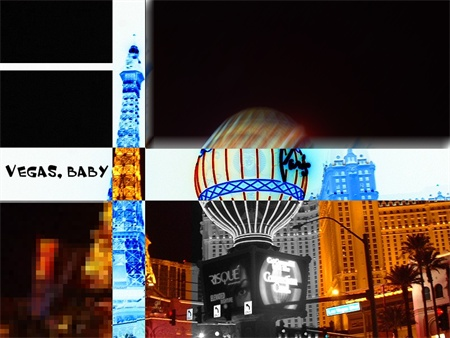

Common Effects
|
 |
The following layer-level effects allow the user to alter the image how he or she feels fit. These effects maybe be applied to the layer as a whole or two a region selected by either the Rectangle Select Tool or the Lasso Select Tool. Lastly, most of the effects supplied by Paint.NET can be honed using specific settings. |
| To learn more about a specific effect, follow the links below:
|